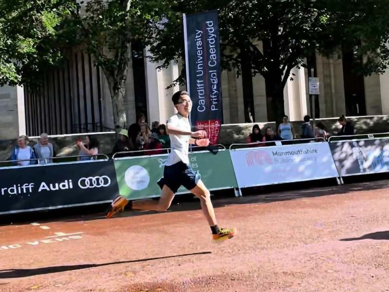

Elsewhere
Five cities so far, and two things that are not bioinformatics: road
running, and a snowboard. Both have the same appeal — the result is not open to
interpretation.
Places
2023 —
València, Spain
PhD in bioinformatics, I2SysBio, CSIC – Universitat de València. With Prof. Ana Conesa.
2024 – 2025
Milan, Italy
Secondment at the IIT Center for Genomic Science, with Dr Francesco Nicassio. December to February, at the bench.
2021 – 2023
Cardiff, United Kingdom
School of Engineering, Cardiff University. MPhil awarded 2026, with Dr Peter Theobald.
2019 – 2021
Gainesville, United States
University of Florida, Conesa lab. On campus 2019–20, then remotely from Beijing until 2021 — PaintOmics 4, and the first long-read work.
2016 – 2020
Wuhan, China
BEng in Bioengineering, Huazhong Agricultural University.
